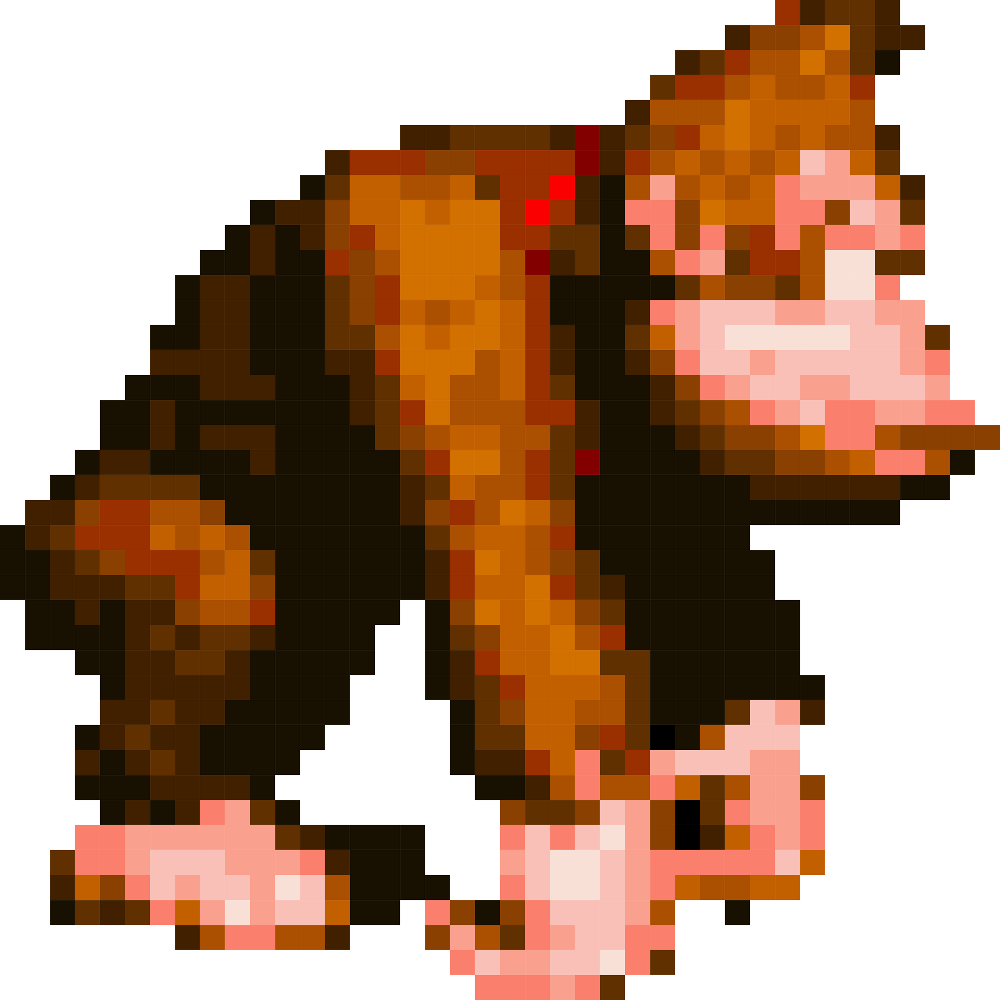
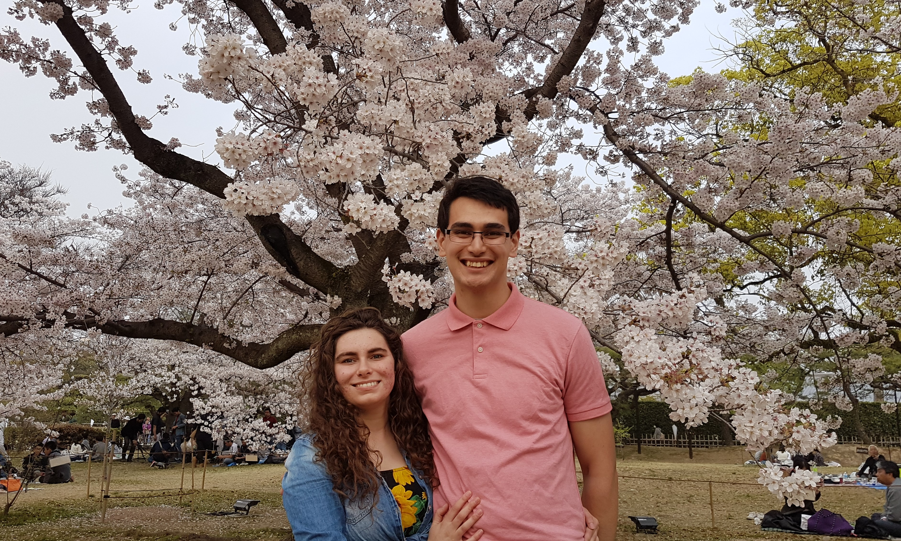

About me
My name is David Kavenga, but you can call me David, or  DK.
I was born in Tauranga, New Zealand, but also grew up in the Waikato. My family are a mix of New Zealand farmers and proud Tongans. I'm grateful for everything I have thanks to them.

From a young age my mother also showed me small bits and pieces from Japan, so I decided a few years ago to take a leap and work there for some time. Working as a foreigner and being borderline illiterate really gave me some perspectives that I'd never had before. I met many great friends and even my wonderful fiancé, Taylor.
My future life plans include moving to the United States and getting married. I hope to build a flexible career that allows me to travel live in both the US and NZ.